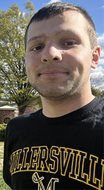

|

Student at Millersville University
|
Hello, my name is Connor Scandone. I am a transfer student from Montgomery County Community College here to finish out my B.S. Degree in Applied Engineering & Technology Management. I am currently at a Junior standing here at Millersville University, and I am hoping to complete the necessary credits/requirements needed for me to graduate in May of 2027.
The reason I came to Millersville University is it is only one of three colleges my advisors recommended to me in order to succeed with my current diagnosis of ADHD Type II Combined. The other two schools were Penn College of Technology & Thaddeus Stevens College. I chose Millersville over those two places, because it is closer to my home in Malvern PA, and I love the campus, and the curriculum aligned with what I want to do when I go out and find employment in the workplace.
Even though my major allows me to pick and choose some electives, I am using those free electives to focus on a minor in Digital Arts & Communication. A few classes I am looking forward to taking are CAD Design, Digital Imaging, and Print Media. I feel these will help allow me to be creative and give another avenue I can pursue once I enter the workforce.
The purpose of my website is to show some of the projects that I've worked on this semester in my AENG-110 class.
|
Home
Bookmark Project
Digital Photography Project
Infographic Project
|